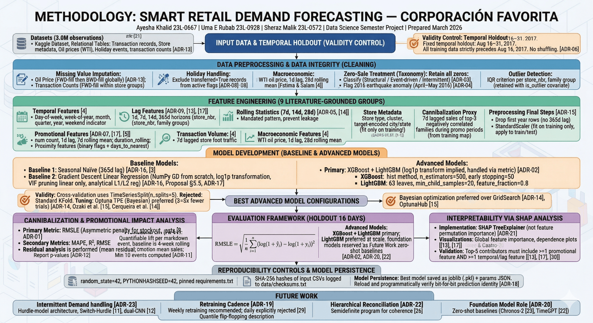

Links: [ADR-05, ADR-06, ADR-15]
Links: [ADR-03, ADR-04]
Links: [ADR-10, ADR-11, ADR-12]
Links: [ADR-02, ADR-20]
Links: [ADR-14]
Links: [ADR-17, ADR-21]
Links: [ADR-01]
• 16-day forecast horizon strictly validated.
• Cross-family cannibalization heatmaps generated dynamically.
Links: [ADR-19, 22, 23]